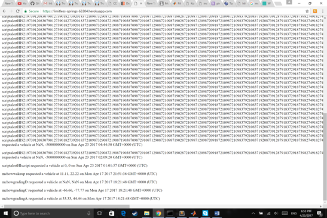

The product was intended to simulate the tracking of passengers and vehicles around the world interacting with a software.
I was hired to test the product for security vulnerabilities and bad programming practiced
First, I tested the site for XSS vulnerabilities. On posting to /submit using CURL, I swapped the usernames from a valid
one to a script tag a: for example <script> alert("hi") </script>. This test was also done for the fields lat
and lng. After this initial test, I then went through the source code to trace the path where input data takes to locate
more security vulnerabilities.
Security issues found include that while data is validated to prevent hostile scripts, data entry is not and the validation of
the fields are lax apart from script checking. There also exist fundamental privacy issues with the functionality of the application
including the ability to track where the app is sending data to and from there finding out passengers and even vehicle listing.
Page found: limitless-springs-63304.herokuapp.com
Description of issue: The field for username has no form of checking if the request is made from a valid site, allowing for
constant posting which makes it hard for users of the site to figure out passenger traffic.
Severity of issue: Medium as it does not compromise the actual usage of the application until the database has been overloaded
which would then render it unable to serve its purpose from the passenger database. Empty strings are allowed as well
Proof of vulnerability:
Resolution: Use local storage/cookies and return functions to track if the same platform is being used to send data repeatedly
Limit username length by the following code: if (username.length > 8) response.send(403)
Page found: limitless-springs-63304.herokuapp.com/submit
Description of issue: The field for lat and lng only check for numerical data and do not send feedback for faulty submissions
Severity of issue: Low as it does not compromise the actual usage of the application. Google Maps renders NaN at 0.
However, if any code was to rely on proper latitudes and longitudes, they would not work in the future
This would also help to check for faulty script on the client side when they do not send valid latitude and longitudes
This is especially the case if the way the distance is calculated is not from the Google Maps API as it could easily lead to console errors
Proof of vulnerability:

Resolution: Check if input lat falls between -90 and 90 while longitude falls between -180 to 180 and respond with an error
Page found: limitless-springs-63304.herokuapp.com/vehicles.json
Description of issue: The field for username has no form of checking if the request is made from a valid site, allowing for
constant probing of the website for vehicles. When done along with assignment 2, list of vehicles can easily be tallied
Severity of issue: Medium as privacy may be compromised from the users to the vehicles travelling and their last known location
That being the case, every user would thus be able to keep track of all of the vehicles and the people driving them.(once known)
It is also possible to brute force the username through schrips should the usernames be insufficiently long enough, which
one can determine simply through the client-side interface
Proof of vulnerability:
Resolution: Assign passwords and require form of authentication when accessing vehicles.json
For a Uber-like service to be done, the usernames of the cars should not be transmitted to the client for privacy purposes
Other requirements include authentication which preferably should be attached to a hash reliant on time to prevent interception
by proxies and easy decryption. Although inputs were checked, the source of the input should be checked to prevent too much
information from the same source, and the all fields should be checked if valid, preferably through signups, thus cataloguing
passengers in an array. To this end, the base website should also be encrypted and require authentication to prevent stalking
of passengersas a privacy measure
Website referenced: https://www.toptal.com/security/10-most-common-web-security-vulnerabilities